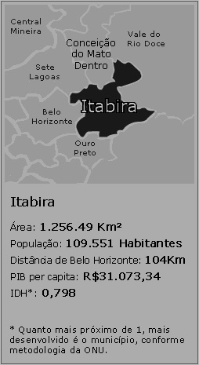

Itabira é um lugar repleto de história, cultura e paisagens deslumbrantes. Seja para uma visita rápida ou para uma estadia mais longa, nossa cidade oferece um ambiente acolhedor, com atrações que vão encantar a todos.
Explore nossas belezas naturais, conheça os pontos turísticos locais e viva uma experiência única em cada esquina. Estamos aqui para tornar sua viagem ainda mais especial.
Historia
Itabira, localizada em Minas Gerais, tem uma rica história que começa no século XVIII, quando os irmãos bandeirantes Francisco e Salvador Faria de Albernaz descobriram ouro na região em 1720. O nome "Itabira" vem do tupi e significa "pedras erguidas", refletindo o terreno montanhoso da área. Ao longo dos anos, a cidade se desenvolveu a partir de um povoado fundado em 1827 e, em 1848, foi elevada à categoria de cidade. Com a queda da mineração de ouro, a exploração de ferro se tornou central na economia local, especialmente após a criação da Companhia Vale do Rio Doce em 1942.
Além de sua importância histórica e econômica, Itabira é famosa por sua conexão com o poeta Carlos Drummond de Andrade, que se inspirou em sua terra natal para várias obras. A cidade também oferece atrações naturais impressionantes, como a Mata do Limoeiro, a Serra do Bicudo, a Serra dos Alves e diversas cachoeiras, como as dos Cristais e do Limoeiro, tornando-se um destino turístico repleto de beleza e cultura.
Carlos Drummond
Carlos Drummond de Andrade, um dos maiores poetas brasileiros, nasceu em Itabira, Minas Gerais, e deixou um legado literário marcante. Sua poesia, marcada pela sensibilidade e uma linguagem acessível, transformava o cotidiano em arte, abordando temas como amor, solidão, política e a condição humana. Influenciado pelo Modernismo, mas transcendendo qualquer escola literária, ele explorou a relação entre o indivíduo e a sociedade, refletindo sobre as angústias existenciais e as transformações do Brasil ao longo do século XX. Obras como A Rosa do Povo e poemas icônicos como No Meio do Caminho consolidaram sua importância na literatura nacional.
Além de poeta, Drummond foi cronista e jornalista, contribuindo significativamente para a cultura brasileira. Seu legado permanece vivo na poesia contemporânea, sendo amplamente estudado e homenageado. Sua cidade natal, Itabira, celebra sua memória com diversos pontos turísticos, como a Casa de Drummond e o Memorial Carlos Drummond de Andrade. Falecido em 1987, seu trabalho continua a inspirar gerações, oferecendo uma reflexão profunda sobre a existência humana e o Brasil, reforçando sua posição como um dos maiores escritores do país.
Pontos Turísticos

Economia
Conhecida como “Cidade do Ferro”, Itabira é o berço da Companhia Vale do Rio Doce, chamada atualmente de Vale. A empresa foi criada, há mais de meio século, para extrair do local a hematita, minério com altíssimo teor de ferro. A exportação do ferro para vários países é a base da economia do município. Aproximadamente 60% da renda da cidade vêm da atividade minerária", informa o antigo prefeito, João Izael. A UNESCO no Brasil, por meio de doação realizada pelo Instituto Cultural Vale, está implementando o Projeto Economia Criativa e Cultura em Itabira desde 2021.O objetivo é impulsionar as atividades econômicas ligadas à criatividade e à cultura como alternativa de desenvolvimento econômico, social e humano da cidade de Itabira, também conhecida como “Cidade do Ferro”, em Minas Gerais.

O projeto visa ainda estimular o desenvolvimento sustentável do município, que se prepara para enfrentar os impactos do fim da exploração de minérios, a partir de 2028. Após mais de 60 anos atuando na região, a saída da mineradora Vale do município alerta para a necessidade de se traçar novos rumos para o desenvolvimento socioeconômico e sustentável de Itabira.
Culinaria
Itabira do Mato Dentro, com mais de 300 anos de história, se destaca não apenas pelo seu passado ligado à mineração, mas também pela rica cultura e gastronomia mineira. A cidade combina desenvolvimento econômico e industrial com um forte cenário cultural, onde música, teatro e tradições gastronômicas desempenham um papel essencial na vida dos habitantes. Sua culinária é um reflexo dessa herança, oferecendo pratos típicos como Feijão Tropeiro e Pão de Queijo de alta qualidade, além dos famosos doces mineiros, como goiabada e doce de leite, encontrados em mercados e restaurantes locais.
Eventos como o Festival Gastronômico de Itabira e o Circuito do Sabor reforçam a identidade culinária da cidade, promovendo oficinas, concursos e a participação de chefs renomados. Além de destacar os sabores típicos, esses festivais impulsionam o turismo e a economia local, valorizando os produtores e a tradição mineira. Para quem deseja explorar a gastronomia da cidade, locais como o Restaurante Dona Dita, o Café da Esquina e a Churrascaria do Beto são paradas obrigatórias. Assim, visitar Itabira é uma oportunidade de vivenciar não apenas sua história e cultura, mas também os autênticos sabores da cozinha mineira.
Hoteis
Calendário de Eventos - Fevereiro 2025
| Dom | Seg | Ter | Qua | Qui | Sex | Sáb |
|---|---|---|---|---|---|---|
| 1 Festival Gastronômico |
2 | 3 | 4 Feira de Artesanato |
5 Show de Samba |
6 Feira 08:00 |
|
| 7 Exposição de Arte |
8 | 9 Concerto de Orquestra |
10 Festival Gastronômico |
11 | 12 Feira de Arte e Cultura |
13 |
| 14 Festa de Carnaval |
15 | 16 | 17 | 18 | 19 | 20 |
| 21 | 22 | 23 | 24 | 25 | 26 | 27 |
| 28 |